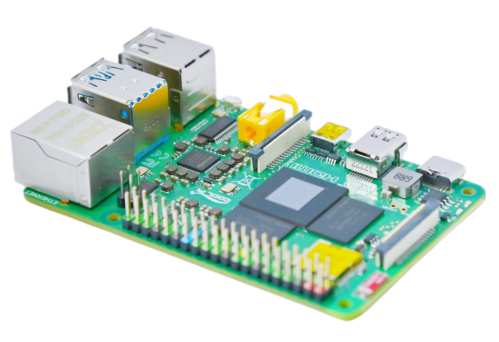
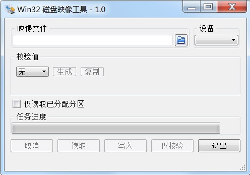
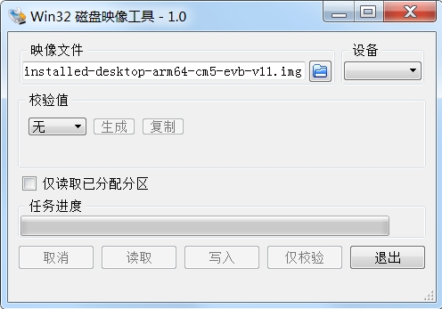
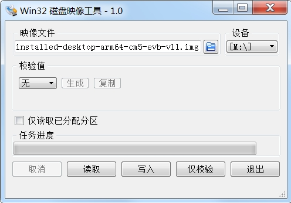
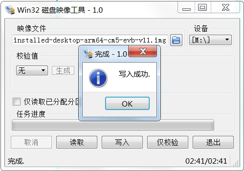
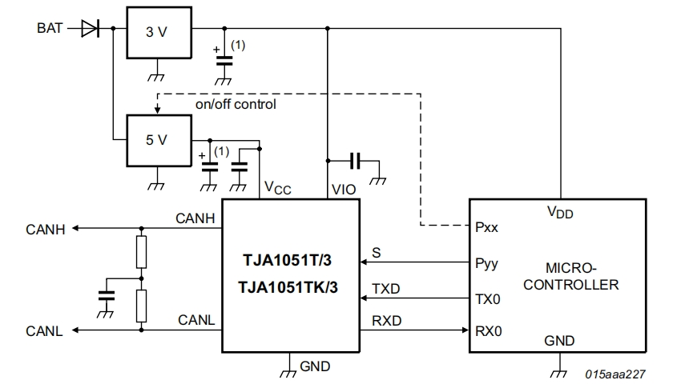

| Interface | Model | Specifications |
|---|---|---|
| CPU | ROCKCHIP RK3588S | 4cores A76(2.2GHz)+4cores A55(1.8GHz) |
| GPU | ARM MaliG610 | 4cores（1GHz） |
| NPU | ROCKCHIP | 4cores（1GHz） |
| DDR | LPDDR4/4X | 2G/4G/8G/16G/32G up to 4266Mbps |
| HDMI | HDMI 2.1 | 8KP60 |
| DP | DP1.4 2Lens | 4KP60 |
| Headphone | Phone+Mic | 2-Channel Stereo |
| USB2.0 | 4x | Only supports HOST mode and two are connector extensions |
| USB3.0 | 2x | The upper layer is an OTG interface |
| Ethernet | Gigabit | Support POE |
| DSI-TX | 2Lens | 4.5Gbps/Line |
| CSI-RX | 2Lens | 2.5Gbps/Line |
| WIFI | WIFI6+BT5.0 | IEEE 802.11b/g/n/ac/ax |
| GPIO | 28 | i2c uart spi can pwm Refer to the following table |
| KEY | POWER | Support user customization |
| Number | Function0 | Function1 | Function2 | Function3 | Function4 | Function5 | Function6 | Function7 | Function8 |
|---|---|---|---|---|---|---|---|---|---|
| 1 | 3V3 | ||||||||
| 3 | GPIO0_D5 | I2C1_SDA_M2 | CAN2_TX_M1 | ||||||
| 5 | GPIO0_D4 | PWM3_IR_M0 | I2C1_SCL_M2 | CAN2_RX_M1 | |||||
| 7 | GPIO1_B7 | SPDIF1_TX_M0 | PWM13_M2 | ||||||
| 9 | GND | ||||||||
| 11 | GPIO4_A0 | I2S1_MCLK_M0 | |||||||
| 13 | GPIO4_A1 | I2S1_SCLK_M0 | |||||||
| 15 | GPIO4_A2 | I2S1_LRCK_M0 | |||||||
| 17 | 3V3 | ||||||||
| 19 | GPIO1_B2 | UART4_RX_M2 | PDM1_SDI3_M1 | SPI0_MOSI_M2 | |||||
| 21 | GPIO1_B1 | PDM1_SDI2_M1 | SPI0_MISO_M2 | ||||||
| 23 | GPIO1_B3 | UART4_TX_M2 | PDM1_CLK1_M1 | SPI0_CLK_M2 | |||||
| 25 | GND | ||||||||
| 27 | I2C6_SDA_M3 | ||||||||
| 29 | GPIO4_A3 | UART0_TX_M2 | |||||||
| 31 | GPIO4_A4 | I2C3_SCL_M2 | UART0_RX_M2 | ||||||
| 33 | GPIO4_A5 | I2S1_SDI0_M0 | I2C3_SDA_M2 | UART3_TX_M2 | |||||
| 35 | GPIO4_A6 | I2S1_SDI1_M0 | I2C5_SCL_M2 | UART3_RX_M2 | |||||
| 37 | GPIO4_A7 | I2S1_SDI2_M0 | I2C5_SDA_M2 | ||||||
| 39 | GND | ||||||||
| 2 | 5V0 | ||||||||
| 4 | 5V0 | ||||||||
| 6 | GND | ||||||||
| 8 | UART2_TXD | ||||||||
| 10 | UART2_RXD | ||||||||
| 12 | GPIO1_A7 | PDM1_SDI0_M1 | PWM3_IR_M3 | ||||||
| 14 | GND | ||||||||
| 16 | GPIO1_A1 | UART6_TX_M1 | |||||||
| 18 | GPIO1_A0 | UART6_RX_M1 | |||||||
| 20 | GND | ||||||||
| 22 | GPIO1_B0 | PDM1_SDI1_M1 | |||||||
| 24 | GPIO1_B4 | UART7_RX_M2 | PDM1_CLK0_M1 | SPI0_CS0_M2 | |||||
| 26 | GPIO1_B5 | UART7_TX_M2 | SPI0_CS1_M2 | ||||||
| 28 | I2C6_SCL_M3 | ||||||||
| 30 | GND | ||||||||
| 32 | GPIO3_B1 | MIPI_CAM4_CLK_M1 | PWM2_M1 | ||||||
| 34 | GND | ||||||||
| 36 | GPIO4_B2 | I2S1_SDO1_M0 | PWM14_M1 | CAN1_RX_M1 | |||||
| 38 | GPIO4_B3 | I2S1_SDO2_M0 | PWM15_IR_M1 | CAN1_TX_M1 | |||||
| 40 | GPIO3_C3 | PWM15_IR_M0 |
Cp4b main board
One of the Storage media below,Capacity greater than 8GB.
HDMI/DP interface display
USB Keyboard and Mouse
Display cable
TF card reader,If using a USB Flash Disk, there is no need for it.
Power adapter
Obtain system image
Operation steps
Using Etcher
Using Win32disk imager
In the Win32disk window, click Select image.

In the Win32disk window, click Select Drive.

In the Win32disk window, click Flash.

In the Win32disk window, once it shows us Flash.

Complete! It is done and can be put into the cp4b.
Using RKdevTool
Using USB-UMS mode
To build a code compilation environment, you can use various Linux distributions to compile the CP4B kernel source code, such as Ubuntu, Debian, etc. The documentation uses Ubuntu 22.04 as an example for explanation.
Both virtual and physical machines are possible.You can also directly compile the kernel source code on cp4b.
Use the following command to obtain the cp4b kernel source code.
git clone https://github.com/yanyitech/coolpi-kernel.git
cd coolpi-kernel
./build-kernel.sh cp4b
cp out/* /boot/firmware/ -R
sudo tar -zxvf /boot/firmware/modules. tar.gz -C /lib
sudo apt update
sudo apt install samba
mkdir /home/coolpi/share
chmod -R 755 /home/coolpi/share
sudo vim /etc/samba/smb.conf
*Add the following code at the end of the file*
[Share]
comment = Shared Folder
path = /home/coolpi/share
browseable = yes
read only = no
guest ok = yes
create mask = 0755
directory mask = 0755
sudo service smbd restart
git clone https://github.com/yanyitech/coolpi-loader.git
cd coolpi-loader
./build-uboot.sh cp4b
Using gpio sysfs to read and write io
sudo su
cd /sys/class/gpio
echo 128 > export
echo out > gpio128/direction # io used for output
echo 1 > gpio128/value # output logic 1 level
echo 0 > gpio128/value # output logic 0 level
echo 128 > unexport
Since linux 4.8 the GPIO sysfs interface is deprecated. User space should use
the character device instead. This library encapsulates the ioctl calls and
data structures behind a straightforward API.
Using libgpiod to read and write gpio
The new design gpiod, gpio access control is achieved by manipulating character device files (such as/dev/gpiodchip0), and provides command tools, C libraries, and Python encapsulation through libgpiod.
Through the gpioset, gpioget, and gpiomon provided by libgpiod, GPIO can be quickly read and written, and input events can be detected.
Install the package for gpiod
sudo apt install -y gpiod
List gpio groups for cp4b
sudo gpiodetect
gpiochip0 [gpio0] (32 lines)
gpiochip1 [gpio1] (32 lines)
gpiochip2 [gpio2] (32 lines)
gpiochip3 [gpio3] (32 lines)
gpiochip4 [gpio4] (32 lines)
gpiochip5 [rk806-gpio] (3 lines)
List detailed information about group 4
sudo gpioinfo 4
gpiochip4 - 32 lines:
line 0: unnamed unused input active-high
line 1: unnamed unused input active-high
line 2: unnamed unused input active-high
line 3: unnamed unused input active-high
line 4: unnamed unused input active-high
line 5: unnamed unused input active-high
line 6: unnamed unused input active-high
line 7: unnamed unused input active-high
line 8: unnamed unused input active-high
line 9: unnamed unused input active-high
line 10: unnamed unused input active-high
line 11: unnamed unused input active-high
line 12: unnamed unused input active-high
line 13: unnamed unused input active-high
line 14: unnamed "enable" output active-high [used]
line 15: unnamed unused input active-high
line 16: unnamed unused input active-high
line 17: unnamed unused input active-high
line 18: unnamed unused input active-high
line 19: unnamed unused input active-high
line 20: unnamed unused input active-high
line 21: unnamed unused input active-high
line 22: unnamed unused input active-high
line 23: unnamed unused input active-high
line 24: unnamed unused input active-high
line 25: unnamed unused input active-high
line 26: unnamed unused input active-high
line 27: unnamed unused input active-high
line 28: unnamed unused input active-high
line 29: unnamed unused input active-high
line 30: unnamed unused input active-high
line 31: unnamed unused input active-high
Operate GPIO4_A0 to output high or low levels
sudo gpioset 4 0=1 # output logic 1 level
sudo gpioset 4 0=0 # output logic 0 level
Get GPIO4_ A0 level
sudo gpioget 4 0
0 # Read the value of GPIO4_A0 is 0
The correspondence between commands and GPIO
For example：GPIO3_C3 ,GPIO3 represents GPIO group 3,C3 is the 19th(8*2+3) GPIO in this group.Therefore, the operation command of GPIO is:
sudo gpioset 3 19=1 # output logic 1 level
sudo gpioset 3 19=0 # output logic 0 level
Using sysfs or gpiod, both are GPIO encapsulated interfaces using Linux. After encapsulation, the versatility is improved, but the performance may weaken. If you have studied 51 and ARM microcontrollers, the most familiar way to read and write GPIO is probably to directly operate the GPIO register, which is the fastest way to control the IO port. In Linux, you can also directly operate the GPIO register.
Operation register controls gpio
In Linux, to directly read and write physical addresses, first open the device file/dev/mem, then use mmap to map the file, and finally read and write the corresponding registers based on the register address.
You can use devmem2 to read and write physical memory addresses. If you cannot aptly install devmem2, you can https://github.com/vctlabs/devmem2 Download and compile a copy.
sudo apt install devmem2
The base addresses of 5 groups of GPIO registers
| Name | Address | Size |
|---|---|---|
| GPIO0 | FD8A0000 | 64KB |
| GPIO1 | FEC20000 | 64KB |
| GPIO2 | FEC30000 | 64KB |
| GPIO3 | FEC40000 | 64KB |
| GPIO4 | FEC50000 | 64KB |
Offset address corresponding to GPIO related registers
| Name | Address | Size | Reset Value | Description |
|---|---|---|---|---|
| GPIO_SWPORT_DR_L | 0x0000 | W | 0x00000000 | Port Data Register (Low) |
| GPIO_SWPORT_DR_H | 0x0004 | W | 0x00000000 | Port Data Register (High) |
| GPIO_SWPORT_DDR_L | 0x0008 | W | 0x00000000 | Port Data Direction Register (Low) |
| GPIO_SWPORT_DDR_H | 0x000C | W | 0x00000000 | Port Data Direction Register(High) |
| GPIO_EXT_PORT | 0x0070 | W | 0x00000000 | External Port Data Register |
Register Operation GPIO4_ A0
0xFEC50000 is the base address of GPIO4.
0x0008 is an input-output register, where the top 15 bits are write enable bits, the bottom 16 bits are corresponding GPIO input-output properties, 1 represents output, and 0 represents input.
0x0000 is a high-level offset register, where 1 represents high level and 0 represents low level.
0x0070 is an input level offset register with a total of 32 bits, representing 32 GPIO states. 1 represents the input high level, and 0 represents the input low level.
devmem2 0xFEC50008 w 0x00010001 #GPIO4_ A0 configured as output mode
devmem2 0xFEC50000 w 0x00010001 #GPIO4_ A0 output high level
devmem2 0xFEC50000 w 0x00010000 #GPIO4_ A0 output low level
devmem2 0xFEC50008 w 0x00010000 #GPIO4_ A0 configured as input mode
devmem2 0xFEC50070 #Get GPIO4_ A0 level
/dev/mem opened.
Memory mapped at address 0x7f86c81000.
Value at address 0xFEC50070 (0x7f86c81070): 0x1F03EF00 #GPIO4_ A0 input value is 0
Operating the uart of the machine
The following table lists the pins of the 40PIN connector that can be used for UART function. Currently, in addition to debugging the serial port, it can also be extended to 5 independent serial ports. The maximum baud rate is 1.5M. The IO level is TTL 3.3V. Note: The serial port number does not correspond one-to-one with the actual system node, and actual operation needs to follow the corresponding device node in the table.
| Serial Number | Definition | Describe | IO Level | Device Node |
|---|---|---|---|---|
| 29 | UART0_TX_M2 | UART0 TXD | TTL 3.3V | /dev/ttyS6 |
| 31 | UART0_RX_M2 | UART0 RXD | TTL 3.3V | /dev/ttyS6 |
| 33 | UART3_TX_M2 | UART3 TXD | TTL 3.3V | /dev/ttyS3 |
| 35 | UART3_RX_M2 | UART3 RXD | TTL 3.3V | /dev/ttyS3 |
| 23 | UART4_TX_M2 | UART4 TXD | TTL 3.3V | /dev/ttyS4 |
| 19 | UART4_RX_M2 | UART4 RXD | TTL 3.3V | /dev/ttyS4 |
| 16 | UART6_TX_M1 | UART6 TXD | TTL 3.3V | /dev/ttyS2 |
| 18 | UART6_RX_M1 | UART6 RXD | TTL 3.3V | /dev/ttyS2 |
| 26 | UART7_TX_M2 | UART7 TXD | TTL 3.3V | /dev/ttyS7 |
| 24 | UART7_RX_M2 | UART7 RXD | TTL 3.3V | /dev/ttyS7 |
DTS configuration
Configure the required serial port node properties to okay in DTS, recompile the kernel to generate a dtb file, and then replace the file in the /boot/firmware directory of the cp4b machine.
&uart0 {
pinctrl-names = "default";
pinctrl-0 = <&uart0m2_xfer>;
status = "okay";
};
&uart3 {
pinctrl-names = "default";
pinctrl-0 = <&uart3m2_xfer>;
status = "okay";
};
&uart4 {
pinctrl-names = "default";
pinctrl-0 = <&uart4m2_xfer>;
status = "okay";
};
&uart6 {
pinctrl-names = "default";
pinctrl-0 = <&uart6m1_xfer>;
status = "okay";
};
&uart7 {
pinctrl-names = "default";
pinctrl-0 = <&uart7m2_xfer>;
status = "okay";
};
Test Command
stty -F /dev/ttyS6 raw speed 115200 # Configure the serial port baud rate corresponding to PIN29 and PIN31 to be 115200
echo "hello coolpi" > /dev/ttyS6 # Send string
cat /dev/ttyS6 # Receive string
Operating the i2c of the machine
As shown in the table below, the 40PIN connector of coolpi 4b can lead out four sets of I2C buses. Among them, I2C1, I2C3, and I2C5 are independent I2C interfaces, which are not multiplexed with other devices inside the machine. The I2C6 board has an RTC clock chip HYM8563 connected to it, with an address of 51H. Therefore, when using the I2C6 port for external devices, be careful not to conflict addresses.
| Serial Number | Port Definition | Describe | Io Status |
|---|---|---|---|
| 3 | I2C1_SDA_M2 | I2C1 SDA | Internal 2.2K Pull up 3.3V |
| 5 | I2C1_SCL_M2 | I2C1 SCL | Internal 2.2K Pull up 3.3V |
| 33 | I2C3_SDA_M2 | I2C3 SDA | Internal 2.2K Pull up 3.3V |
| 31 | I2C3_SCL_M2 | I2C3 SCL | Internal 2.2K Pull up 3.3V |
| 37 | I2C5_SDA_M2 | I2C5 SDA | Internal 2.2K Pull up 3.3V |
| 35 | I2C5_SCL_M2 | I2C5 SCL | Internal 2.2K Pull up 3.3V |
| 27 | I2C6_SDA_M3 | I2C6 SDA | Internal 2.2K Pull up 3.3V |
| 28 | I2C6_SCL_M3 | I2C6 SCL | Internal 2.2K Pull up 3.3V |
DTS configuration
The configuration method of the device driver should refer to the I2C6 node, and be careful not to use the I2C function to ensure that the node's status is disabled, otherwise it may cause other functional abnormalities.
After modifying the dts file, the kernel needs to be recompiled and the newly generated dtb file needs to be replaced in the cp4b /boot/firmware directory.
&i2c1 {
status = "okay";
pinctrl-names = "default";
pinctrl-0 = <&i2c1m2_xfer>;
};
&i2c3 {
status = "okay";
pinctrl-names = "default";
pinctrl-0 = <&i2c3m2_xfer>;
};
&i2c5 {
status = "okay";
pinctrl-names = "default";
pinctrl-0 = <&i2c5m2_xfer>;
};
&i2c6 {
status = "okay";
pinctrl-names = "default";
pinctrl-0 = <&i2c6m3_xfer>;
hym8563: hym8563@51 {
compatible = "haoyu,hym8563";
reg = <0x51>;
#clock-cells = <0>;
clock-frequency = <32768>;
clock-output-names = "hym8563";
pinctrl-names = "default";
pinctrl-0 = <&hym8563_int>;
interrupt-parent = <&gpio0>;
interrupts = <RK_PB0 IRQ_TYPE_LEVEL_LOW>;
status = "okay";
};
};
Test Command
git clone git://git.kernel.org/pub/scm/utils/i2c-tools/i2c-tools.git
cd i2c-tools
make -j8
sudo make install
root@ubuntu:/# i2cdetect -y 6
0 1 2 3 4 5 6 7 8 9 a b c d e f
00: -- -- -- -- -- -- -- --
10: -- -- -- -- -- -- -- -- -- -- -- -- -- -- -- --
20: -- -- -- -- -- -- -- -- -- -- -- -- -- -- -- --
30: -- -- -- -- -- -- -- -- -- -- -- -- -- -- -- --
40: -- -- -- -- -- -- -- -- -- -- -- -- -- -- -- --
50: -- UU -- -- -- -- -- -- -- -- -- -- -- -- -- --
60: -- -- -- -- -- -- -- -- -- -- -- -- -- -- -- --
70: -- -- -- -- -- -- -- --
Operating the spi of the machine
The serial number of the SPI interface corresponding to the 40PIN connector.
| Serial Number | Port Definition | Describe | Io Status |
|---|---|---|---|
| 19 | SPI0_MOSI_M2 | MOSI | Internal 2.2K Pull up 3.3V |
| 21 | SPI0_MISO_M2 | MISO | Internal 2.2K Pull up 3.3V |
| 23 | SPI0_CLK_M2 | CLK | Internal 2.2K Pull up 3.3V |
| 24 | SPI0_CS0_M2 | CS0 | Internal 2.2K Pull up 3.3V |
| 26 | SPI0_CS1_M2 | CS1 | Internal 2.2K Pull up 3.3V |
DTS Configuration
&spi0 {
pinctrl-names = "default";
status = "okay";
max-freq = <48000000>; /* spi internal clk, don't modify */
spi_dev@0 {
compatible = "rockchip,spidev";
reg = <0>;
spi-max-frequency = <12000000>;
spi-lsb-first;
};
spi_dev@1 {
compatible = "rockchip,spidev";
reg = <1>;
spi-max-frequency = <12000000>;
spi-lsb-first;
};
};
Test Command
Loopback test requires short circuiting of pins 19 and 21
sudo apt-get install spi-tools # Install tool software
spi-config -d /dev/spidev0.0 -q # Confirm the configuration of option 0
/dev/spidev0.0: mode=0, lsb=0, bits=8, speed=12000000, spiready=0
spi-config -d /dev/spidev0.1 -q # Confirm the configuration of option 1
/dev/spidev0.1: mode=0, lsb=0, bits=8, speed=12000000, spiready=0
printf 'hello coolpi!' | spi-pipe -d /dev/spidev0.0 | hexdump -C # Send string
00000000 68 65 6c 6c 6f 20 63 6f 6f 6c 70 69 21 |hello coolpi!|
0000000d
Operating the pwm of the machine
| Serial Number | Port Definition | Describe | Io Status |
|---|---|---|---|
| 5 | PWM3_IR_M0 | PWM3 | Internal 10K Pull up 3.3V |
| 7 | PWM13_M2 | PWM13 | Internal 47K Pull up 3.3V |
| 12 | PWM3_IR_M3 | PWM3 | Internal 47K Pull up 3.3V |
| 32 | PWM2_M1 | PWM2 | Internal 10K Pull up 3.3V |
| 36 | PWM14_M1 | PWM14 | Internal 2.2K Pull up 3.3V |
| 38 | PWM15_IR_M1 | PWM15 | Internal 2.2K Pull up 3.3V |
| 40 | PWM15_IR_M0 | PWM15 | Internal 2.2K Pull up 3.3V |
&pwm3 {
pinctrl-0 = <&pwm3m3_pins>;
status = "okay";
};
root@Ubuntu:/sys/class/pwm# ls
pwmchip0 pwmchip1 pwmchip2
root@Ubuntu:/sys/class/pwm# cd pwmchip1
root@Ubuntu:/sys/class/pwm/pwmchip1# ls
device export npwm power subsystem uevent unexport
root@Ubuntu:/sys/class/pwm/pwmchip1# echo 0 >export
root@Ubuntu:/sys/class/pwm/pwmchip1# ls
device export npwm power pwm0 subsystem uevent unexport
root@Ubuntu:/sys/class/pwm/pwmchip1# cd pwm0/
root@Ubuntu:/sys/class/pwm/pwmchip1/pwm0# ls
capture duty_cycle enable output_type period polarity power uevent
cd /sys/class/pwm/pwmchip1/
echo 0 > export
cd pwm0
echo 10000 > period
echo 5000 > duty_cycle
echo normal > polarity
echo 1 > enable
Operating the can bus of the machine
The serial number of the can interface corresponding to the 40PIN connector.
| Serial Number | Port Definition | Describe | Io Status |
|---|---|---|---|
| 3 | CAN2_TX_M1 | TXD | Internal 10K Pull up 3.3V |
| 5 | CAN2_RX_M1 | RXD | Internal 10K Pull up 3.3V |
| 38 | CAN1_TX_M1 | TXD | Internal 47K Pull up 3.3V |
| 36 | CAN1_RX_M1 | RXD | Internal 47K Pull up 3.3V |
The output of cp4b is the CAN signal of TTL. If normal communication is required, an interface conversion board needs to be added to convert the TTL signal into CANH CANL standard signal. The conversion circuit diagram is shown below:

&i2c1 {
status = "disabled";
pinctrl-names = "default";
pinctrl-0 = <&i2c1m2_xfer>;
};
&can1 {
pinctrl-names = "default";
pinctrl-0 = <&can1m1_pins>;
status = "okay";
};
&can2 {
pinctrl-names = "default";
pinctrl-0 = <&can2m1_pins>;
status = "okay";
};
ifconfig -a
ip link set can0 down
ip link set can0 type can bitrate 500000
ip -details -statistics link show can0
ip link set can0 up
cansend can0 123#DEADBEEF
cansend can0 123#R
cansend can0 00000123#12345678
cansend can0 00000123#R
candump can0